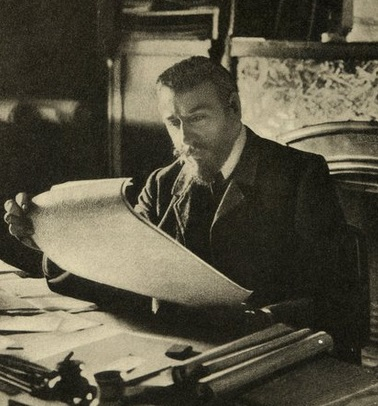

빅토르 오르타
빅토르 피에르 오르타(프랑스어: Victor Pierre Horta, 1861년 1월 6일 헨트 ~ 1947년 9월 8일 브뤼셀)는 벨기에의 건축가이다.
아르 누보 양식의 건축을 대표하는 건축가로 여겨진다.

빅토르 오르타의 일생
- 1.헨트 출신이며 12세에 삼촌이 일하던 건설 현장을 도우면서 건축에 흥미를 갖게 되었다.
- 2.1880년 아버지가 사망하면서 벨기에로 귀환했고 브뤼셀 왕립 미술학교에 입학했다.
- 3.1932년에는 벨기에의 알베르 1세 국왕으로부터 남작 작위를 받았다.
- 4.2000년에는 오르타가 설계한 브뤼셀의 4채의 개인 저택이 유네스코가 지정한 세계유산에 등재되었다.